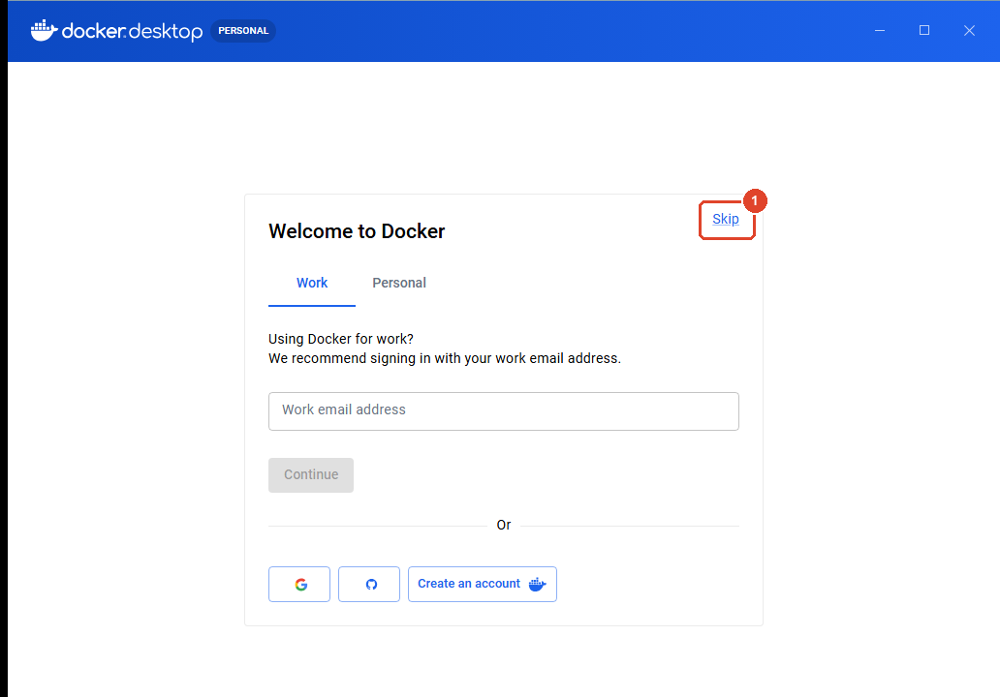
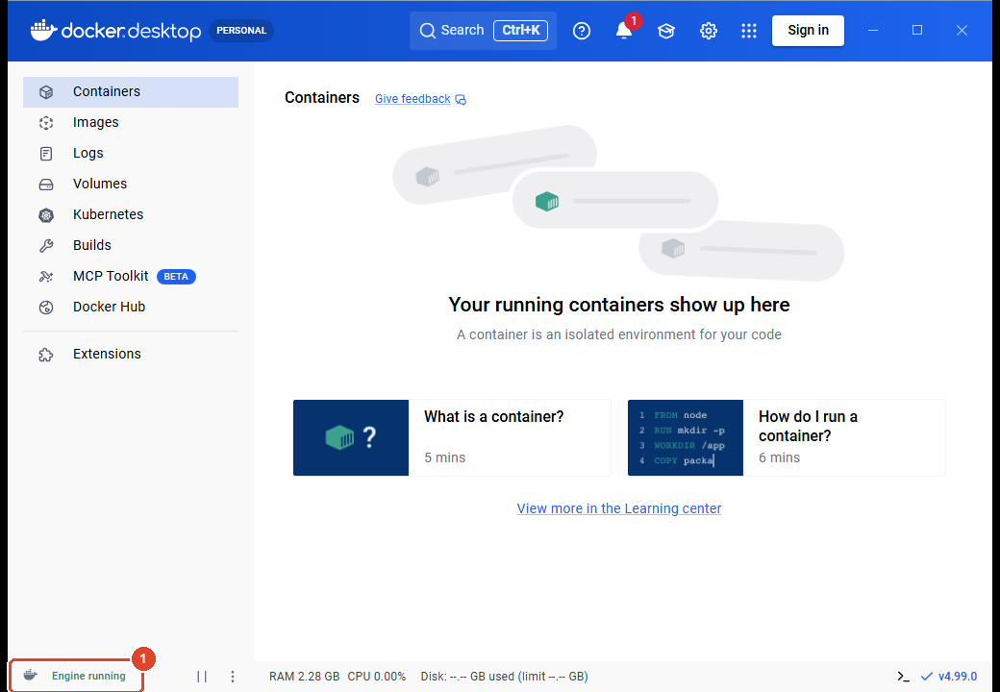
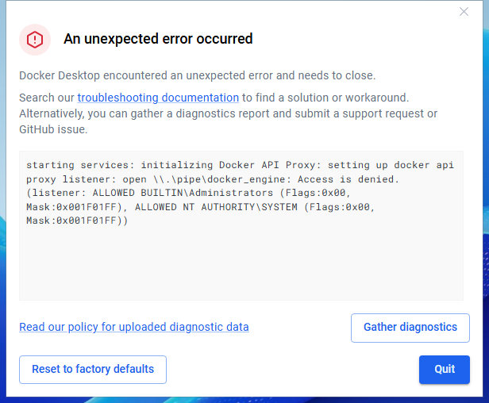

Глава для тех, у кого на Windows не запускается Docker Desktop. Проверяем по порядку четыре вещи снизу вверх, а если не поможет — поднимаем стенд в Ubuntu внутри Windows.
Категория
Подготовка рабочего места · запасная глава
Уровень
Начальный
Связанные темы
0.1 Стенд: Docker и базы
Понадобится
права администратора, одна-две перезагрузки
Суть за две минуты
Docker Desktop стоит на WSL 2
WSL 2 — маленький Linux, встроенный в Windows. В нём и работают контейнеры.
Нет WSL 2 — Docker Desktop не стартует.
WSL 2 нужна виртуализация
Это переключатель в BIOS компьютера. Выключен — не работает ни WSL 2, ни Docker.
Проверка — в диспетчере задач.
Проверяем снизу вверх
Windows → виртуализация → WSL → Docker Desktop. Нашли поломку — чиним и запускаем снова.
Зачем это знатьЧтобы искать поломку по порядку: от самого нижнего слоя к верхнему.
Контейнерам нужен Linux. На Windows его даёт WSL 2 — встроенная подсистема Windows для Linux. А WSL 2 — это маленькая виртуальная машина, и ей нужна аппаратная виртуализация процессора. Получается стопка из четырёх слоёв:
Слои под Docker Desktop на Windows
Каждый слой держит тот, что выше. Если внизу поломка, верхние не заработают, сколько бы вы ни переустанавливали Docker Desktop. Поэтому проверяем снизу вверх.
слои на примере лампы, удлинителя и розетки
🔌
виртуализация
РозеткаНет тока в розетке — ничего не загорится.
ток
🧵
WSL 2
УдлинительПередаёт ток дальше. Порван — до лампы не дойдёт.
ток
💡
Docker Desktop
ЛампаНе горит? Меняют лампу последней.
Что есть что: розетка — виртуализация в BIOS; удлинитель — WSL 2; лампа — Docker Desktop. Новая лампа в розетке без тока тоже не загорится: переустановка Docker Desktop не поможет, если выключена виртуализация.
§2Проверка 1. Версия Windows
Зачем этот шагDocker Desktop работает не на любой Windows. Убедимся, что ваша подходит.
Делаем
Нажмите Win + R, наберите winver и нажмите EnterОткроется окно «Windows: сведения». Во второй строке — версия и номер сборки.
Windows 10
версия 22H2сборка 19045
или
Windows 11
версия 23H2 и новеесборка 22631 и выше
версия не ниже указанной. Ниже — обновите Windows: «Параметры» → «Центр обновления Windows».
что ещё требует Docker
По документации Docker: 64-битная Windows, 64-битный процессор, 8 ГБ оперативной памяти и включённая в BIOS виртуализация. WSL — версии 2.1.5 или новее.
§3Проверка 2. Виртуализация
Зачем этот шагНа части компьютеров виртуализация выключена в BIOS с завода. Проверяем её сразу после версии Windows.
Делаем
Откройте диспетчер задачCtrl + Shift + Esc.
Вкладка «Производительность» → «ЦП»Справа внизу найдите строку «Виртуализация». В английской Windows — Virtualization.
написано
Виртуализация: ВключеноВсё в порядке, переходите к проверке 3.
или
написано
Виртуализация: ОтключеноВключите её в BIOS — шаги ниже.
проверка той же строки командой
По документации Docker виртуализацию можно проверить и в PowerShell командой systeminfo. Если в конце ответа есть такая строка, всё в порядке:
Вывод systeminfoпоследняя строка; снято на Windows в GitHub Actions
Hyper-V Requirements: A hypervisor has been detected. Features required for Hyper-V will not be displayed.
Как включить в BIOS
BIOS (на новых компьютерах — UEFI) — настройки компьютера, которые работают ещё до Windows. Попасть в них можно из самой Windows:
«Параметры» → «Система» → «Восстановление»У пункта «Расширенные параметры запуска» нажмите «Перезагрузить сейчас». В Windows 10 путь другой: «Параметры» → «Обновление и безопасность» → «Восстановление» → «Особые варианты загрузки».
«Поиск и устранение неисправностей» → «Дополнительные параметры» → «Параметры встроенного ПО UEFI»Нажмите «Перезагрузить». Компьютер откроет настройки BIOS.
Найдите и включите виртуализациюНазвание зависит от производителя. Ищите на вкладках Advanced, CPU Configuration или Security:
Сохраните и выйдитеОбычно клавиша F10 → Save & Exit. Компьютер загрузит Windows.
после перезагрузки в диспетчере задач написано «Виртуализация: Включено».
в BIOS включено, а в диспетчере всё равно «Отключено»
Некоторые программы при установке отключают запуск гипервизора — части Windows, которая отвечает за виртуальные машины. Так делают, например, отдельные эмуляторы Android. По документации Docker лечится одной командой в PowerShell от имени администратора и перезагрузкой:
PowerShellот имени администратора
bcdedit /set hypervisorlaunchtype auto
§4Проверка 3. WSL
Зачем этот шагУбедиться, что WSL установлена и не устарела. Docker Desktop нужна WSL версии 2.1.5 или новее.
Делаем
Откройте PowerShell от имени администратора: Win + X → «Терминал (администратор)», в Windows 10 — «Windows PowerShell (администратор)». Выполните:
PowerShellкакая WSL стоит
wsl --version
Выводснято на Windows в GitHub Actions; у вас номера свои, в русской Windows подписи по-русски
Нужна первая строка — WSL version. Здесь 3.0.3.0, это больше, чем 2.1.5.
версия 2.1.5 и новее
Всё в порядкеПереходите к проверке 4.
или
версия старее
wsl --updateОбновит WSL за минуту.
или
команда не найдена
wsl --installПоставит WSL. Затем перезагрузка.
wsl --version печатает строку WSL version (в русской Windows — «Версия WSL») с номером 2.1.5 или больше.
что ещё показывает WSL и как её перезапустить
Какие системы Linux живут в WSL, показывает wsl -l -v. После запуска Docker Desktop в списке появляется его собственная система docker-desktop:
PowerShellсистемы Linux в WSL
wsl -l -v
ВыводDocker Desktop запущен
NAME STATE VERSION
* docker-desktop Running 2
Столбец VERSION — версия WSL для этой системы: нужна 2.
Если WSL ведёт себя странно, её можно перезапустить целиком. Команда останавливает всё, что работает в WSL, включая Docker Desktop:
PowerShellперезапуск WSL
wsl --shutdown
После неё снова запустите Docker Desktop.
§5Проверка 4. Окно ошибки Docker Desktop
Зачем этот шагЕсли три нижних слоя в порядке, а Docker Desktop всё равно падает, он сам пишет причину. Учимся её читать.
При первом запуске Docker Desktop предлагает войти в учётную запись. Для стенда она не нужна — нажмите Skip:

Docker Desktop 4.99 · первый запуск · 1 — Skip · снято на Windows
Если всё в порядке, через минуту внизу слева появится Engine running:

Docker Desktop на Windows · 1 — Engine running: движок работает
Когда Docker Desktop запуститься не может, вместо этого он показывает окно ошибки:

Docker Desktop 4.99 · окно ошибки · снято на Windows, где уже работал ещё один Docker
1 · серое поле
ПричинаСкопируйте первую строку и найдите её в таблице ниже или в поиске.
потом
2 · Quit
Закрыть и починитьИсправьте причину и запустите Docker Desktop снова.
крайний случай
3 · Reset to factory defaults
Сброс всегоСтирает настройки, образы и тома. Стенд потом загрузится заново.
На кадре причина — Access is denied у \\.\pipe\docker_engine: на компьютере уже работал другой Docker и занял его канал связи. Такое бывает, если раньше ставили Docker другим способом. Удалите старый Docker через «Параметры» → «Приложения» и перезагрузитесь.
в нижнем левом углу окна Docker Desktop написано Engine running. Возвращайтесь в главу 0.1.
§6План Б. Docker прямо в Ubuntu
Зачем этот шагВиртуализация и WSL работают, а Docker Desktop так и не запустился. Тогда ставим Docker внутрь Ubuntu в WSL — так же, как на обычный Linux.
Windows
браузерlocalhost:8123/play
WSL пробрасывает
WSL 2
UbuntuDocker Engine вместо Docker Desktop
внутри
контейнер
course-clickhouseтот же стенд
Мы проверили этот путь на Windows с Ubuntu 26.04: стенд загрузился, и браузер Windows получил те же числа. Стенд тот же, команды те же. Отличие одно: все команды набираются в окне Ubuntu. Браузер в Windows по-прежнему открывает localhost:8123/play — WSL сама передаёт такие запросы в Ubuntu.
Делаем
Поставьте UbuntuВ PowerShell от имени администратора:
PowerShellот имени администратора
wsl --install -d Ubuntu
Когда откроется окно Ubuntu, придумайте имя пользователя и пароль. Пароль при наборе не отображается — так и должно быть.
Поставьте Docker в UbuntuВ окне Ubuntu — те же три команды, что для Linux в главе 0.1:
Ubuntuустановка Docker Engine
Скрипт напишет WSL DETECTED: We recommend using Docker Desktop for Windows. и подождёт 20 секунд. Не нажимайте Ctrl + C: после паузы установка продолжится сама.
Закройте окно Ubuntu и откройте сноваТак вступит в силу группа docker из последней команды.
Скачайте репозиторий в домашнюю папку Ubuntu и поднимите стендUbuntuстенд
cd ~
git clone https://github.com/MaximBytecamp/clickhouse-practice.git
cd clickhouse-practice
docker compose up -d
в браузере Windows открывается localhost:8123/play, а проверочный запрос из главы 0.1 показывает 10 324 592 строки в web.events.
почему репозиторий лежит в домашней папке Ubuntu
Диски Windows доступны в Ubuntu по адресу /mnt/c, но файлы там читаются через мост между двумя системами и медленнее. Docker в Ubuntu работает быстрее с файлами из её собственной папки ~. Открыть эту папку в Проводнике Windows можно по адресу \\wsl$\Ubuntu\home\ваше_имя.
После перезагрузки компьютера стенд сам не поднимается. Откройте окно Ubuntu, перейдите в ~/clickhouse-practice и выполните docker compose up -d.
§7Если не получилось
Найдите сообщение, похожее на ваше, и раскройте его.
Docker Desktop не запущенfailed to connect to the docker API at npipe:////./pipe/dockerDesktopLinuxEngine; check if the path is correct and if the daemon is running: open //./pipe/dockerDesktopLinuxEngine: The system cannot find the file specified.
Так отвечает docker version, пока движок Docker Desktop не запущен. Запустите Docker Desktop и дождитесь Engine running. Падает с окном ошибки — проверка 4.
Канал Docker занят другим Dockersetting up docker api proxy listener: open \\.\pipe\docker_engine: Access is denied.
На компьютере есть ещё один Docker — например, поставленный раньше отдельно. Удалите его через «Параметры» → «Приложения», перезагрузитесь и запустите Docker Desktop.
Установка Ubuntu зависла на 0,0%wsl --install -d Ubuntu: Downloading … 0.0%
По документации Microsoft помогает загрузка напрямую: wsl --install --web-download -d Ubuntu.
§8Проверьте себя
Docker Desktop падает при запуске. Вы переустановили его трижды — не помогло. Что проверить?
Слои ниже: версию Windows, виртуализацию в диспетчере задач и wsl --version. Если выключена виртуализация, переустановка Docker Desktop ничего не изменит — как новая лампа в розетке без тока.
Где смотреть, включена ли виртуализация?
Диспетчер задач → «Производительность» → «ЦП», строка «Виртуализация». Включают её в BIOS: у Intel — Intel Virtualization Technology, у AMD — SVM Mode.
В плане Б стенд работает в Ubuntu. Почему браузер в Windows открывает Play UI?
WSL 2 передаёт обращения к localhost из Windows в Ubuntu. Поэтому localhost:8123 в браузере Windows попадает на сервер, который работает в Ubuntu.
§9Шпаргалка
Проверитьwinver # версия WindowsCtrl+Shift+Esc → ЦП # виртуализацияwsl --version # версия WSL